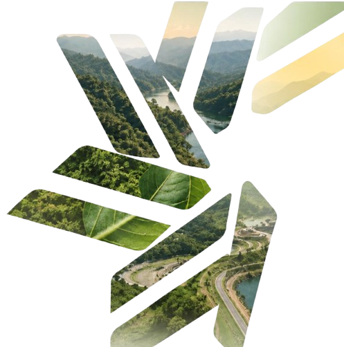
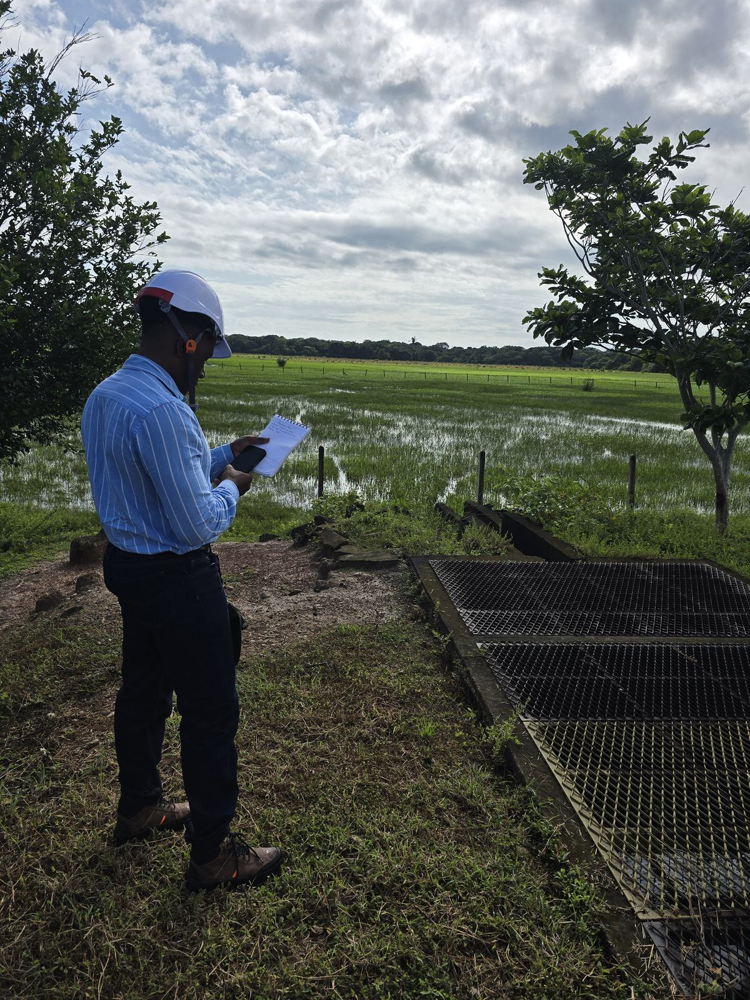
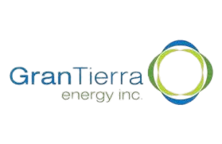
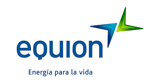
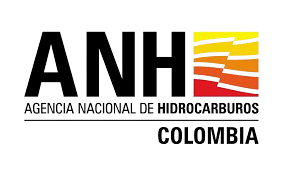

91 herramientas en producción nacidas de la operación real de consultoría ambiental colombiana. Una respuesta tecnológica integral y comprobada para el sondeo de mercado CENIT VH-2026-369.

El reto
Un proyecto ante la autoridad ambiental mueve información geográfica bajo un modelo de datos oficial de catálogo cerrado —el definido por la Resolución 2182 de 2016—, donde cada capa, campo y relación tiene una definición exacta y una sola desviación basta para que una entrega se devuelva. A eso se suman expedientes documentales extensos, campañas de campo en zonas sin conectividad y múltiples disciplinas que deben producir información coherente entre sí.
El escenario se complica cuando intervienen varios terceros ejecutores y actores territoriales: la calidad del dato final depende de que todos capturen bajo el mismo criterio, y la revisión manual al final del proceso convierte cada hallazgo tardío en reproceso, pérdida de coherencia y riesgo de no conformidad en cadena.
La respuesta de InnoLab es trasladar el control al momento en que nace el dato y automatizar la verificación contra el estándar, de modo que cada fase entregue a la siguiente información ya conforme.
Control desde el origen del dato: cada entrega queda documentada como evidencia, no como declaración.
Qué ofrece InnoLab
Las capacidades se agrupan en cinco líneas que recorren el ciclo completo del dato socioambiental: desde su captura en campo hasta su consulta y publicación. Cada una puede contratarse de forma independiente o integrada según el alcance que CENIT defina.
▸ Pulsa cada línea para desplegar el detalle técnico, o salta directo desde las etiquetas:
Validación automatizada de la información geográfica contra el modelo de almacenamiento oficial de la autoridad ambiental, con perfiles diferenciados según el tipo de trámite.
El motor evalúa el modelo completo —242 objetos entre clases de entidad y tablas, 4.799 campos, 308 dominios y 400 relaciones— a través de 29 módulos organizados en 5 ejes: estructura, calidad documental, consistencia temática, validación espacial y reportes. Los hallazgos se clasifican en 4 niveles de severidad según la criticidad de la regla, y un módulo de comparación entre versiones de geodatabase identifica qué se corrigió, qué persiste y qué se deterioró entre entregas.
Cada entrega sale acompañada de un certificado de conformidad trazable, con el registro de las reglas evaluadas, la fecha y la versión del conjunto de datos.
Entregable — Certificado de conformidad por entrega, con hallazgos priorizados por severidad y soporte verificable.
Formularios estructurados para dispositivos móviles que operan sin conexión, pensados para las condiciones reales del territorio colombiano.
Listas de valores controladas, campos obligatorios condicionados y validación en el punto de captura: el dato nace conforme al estándar en lugar de corregirse después. La evidencia fotográfica se estampa automáticamente con fecha, hora y coordenada, y el paquete de campo se convierte en geodatabase y visor sin intervención manual. La línea incluye verificación de coberturas con aeronaves no tripuladas operadas por pilotos certificados.
Registros de campo con metadatos automáticos de fecha, hora y posición, integrados a la misma cadena de datos que alimenta la entrega final.
Entregable — Paquete de campo trazable convertido directamente a geodatabase, sin transcripción intermedia.
Consulta automatizada de fuentes oficiales de información geográfica, instrumentos de ordenamiento territorial e información del recurso hídrico.
Clientes automatizados reúnen el contexto territorial de un proyecto antes de la salida a campo —no días después—, con construcción de geodatabases de contexto, visores por proyecto y disposición de la información en formatos abiertos y reutilizables cuando deba ponerse a disposición del público.
Contexto territorial consolidado y consultable antes de movilizar equipos, con trazabilidad de la fuente oficial de cada insumo.
Entregable — Geodatabase de contexto y visor por proyecto, con información en formatos abiertos.
Consulta en lenguaje natural sobre expedientes, actos administrativos y estudios, con respuestas citadas al documento y la página de origen: cada afirmación es verificable.
El procesamiento se ejecuta 100% en infraestructura local con hardware dedicado: la información no viaja a servicios de inteligencia artificial en nube pública ni se usa para entrenar modelos de terceros. La línea incluye generación asistida de matrices de consistencia entre capítulos, extracción y formateo de tablas, transcripción automática de reuniones y elaboración de informes.
Cada respuesta llega con su cita documental, de modo que el revisor puede contrastarla contra el expediente en el punto exacto de origen.
Entregable — Respuestas citadas a documento y página, matrices y borradores generados sin salir del perímetro del cliente.
Instrumento de evaluación y priorización de iniciativas con criterios parametrizables, escalas controladas y semaforización automática.
Una compuerta de decisión verifica condiciones en cascada e indica el primer requisito incumplido cuando un elemento no puede avanzar. Cada iniciativa registra estado, responsable, siguiente acción y bloqueador activo sobre un tablero que se recalcula en vivo. Es el mismo instrumento que gobierna hoy las 160 iniciativas del portafolio de InnoLab.
El propio portafolio de InnoLab opera bajo este modelo y es demostrable en funcionamiento durante una sesión técnica.
Entregable — Tablero en vivo con puntuación calculada, semaforización y trazabilidad de decisión por iniciativa.
Un esquema de crecimiento sin rediseño: el paso de una fase a la siguiente amplía la capacidad operativa sin invalidar lo procesado previamente.
Herramientas locales portables, Python Toolboxes, captura desconectada y aseguramiento en origen por brigada.
Servidor de sincronización autoalojado, repositorio central de proyectos, respaldo automatizado y control de versiones.
Validación y certificación expuestas como APIs REST internas, integradas a los sistemas corporativos que CENIT designe.
Portal de entrega para contratistas, habilitación certificada, federación institucional y estándares abiertos.
Principios técnicos reales implementados hoy para garantizar la estricta confidencialidad de la información corporativa de CENIT.
Herramientas probadas en contratos exigentes con los principales operadores del sector energético e institucional.

Especialistas de GEOTEC ejecutando levantamiento socioambiental con formularios desconectados, control de variables bióticas y georreferenciación estricta en ecosistemas estratégicos.



Una evaluación técnica seria requiere transparencia sobre el alcance actual y las rutas de integración corporativa.
Opera como conjunto de aplicaciones portables, módulos de automatización e infraestructura local. El acceso web centralizado corresponde a la Fase 2–3 del plan de escalamiento.
Las herramientas pueden exponerse como servicios consumibles desde la infraestructura GIS y los repositorios documentales que CENIT tenga en operación.